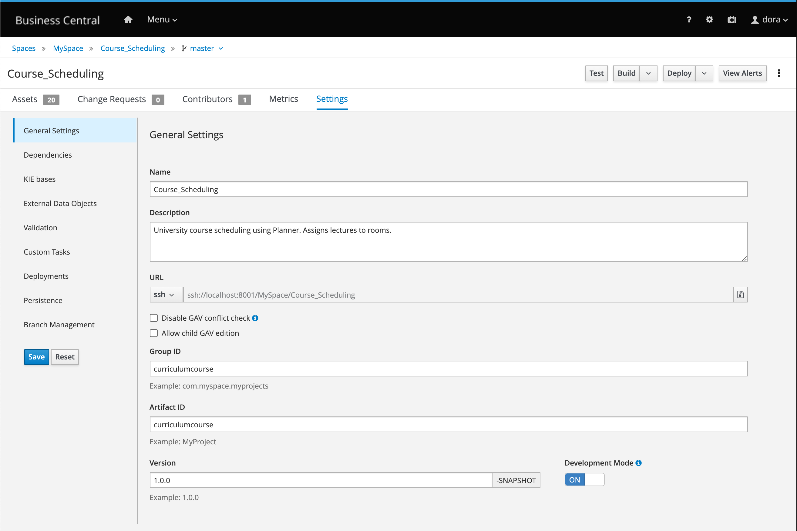
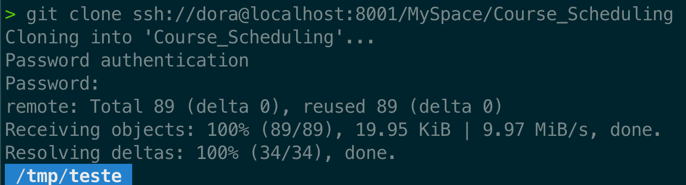
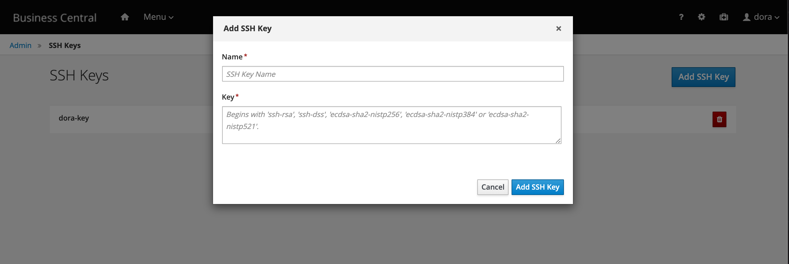
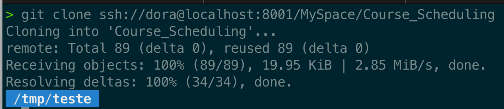
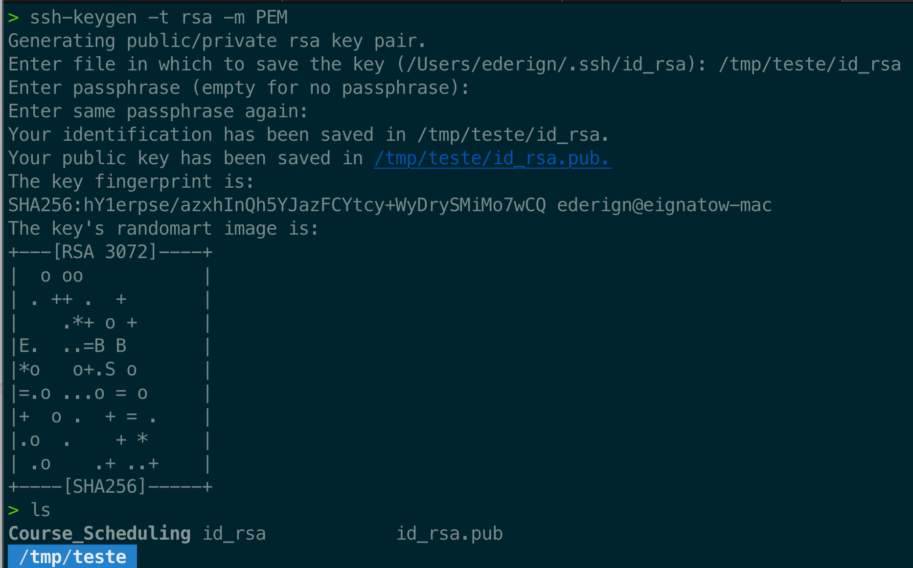
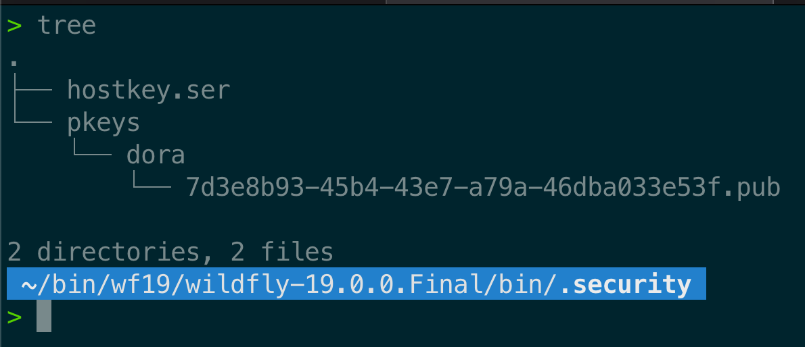

Business Central SSH Key-Based Authentication
Do you know it is possible to authenticate to Business Central Storage (niogit) using SSH Key-Based Authentication? If you don’t, let’s learn how we can do it in this post.
Business Central storage internally is git-based and we also expose cool additional features to more advanced use cases. One of these hidden gems of Business Central is SSH Key-Based Authentication, pretty useful for your CI/CD.
To start using SSH Key-Based Authentication in Business Central, under the project settings menu, you can copy the URL for doing SSH operations over your project:

For instance, to do a git clone of this project, you can do the following command:
git clone ssh://{user}@localhost:8001/MySpace/Course_Scheduling

But can we do it using my SSH Keys and without having to type the password?
Business Central SSH Key-Based Authentication
Yes, and it’s super simple. Go under the BC settings menu (cog icon), click on ‘SSH Keys’, and add your public RSA ssh keys there.

As soon as you add your public RSA ssh key for Business Central, you can do a git clone operation without having to inform the user and password:

If you don’t have ssh keys, you can create it with the following command:
ssh-keygen -t rsa -m PEM

Note: You don’t need to provide any passphrases. Keep in mind there are multiple configurations to create your ssh keys. This is just an example of the command.
Advanced Options
In most of the use cases, users should associate ssh keys to BC users via Business Central UI. But you can also add them manually over the Business Central Key store directory (for instance, in an automated way via i.e. Ansible).
By default, BC uses “.security” directory created on the same directory where you launched wildfly/eap. But this can be also configured with a system property “appformer.ssh.keys.storage.folder”.
The SSH public keys are stored in the {securityFolderPath}/pkeys/{userName}/ folder structure.

As an example, this is the command to me to use /folder/security as my personalized key folder:
./standalone.sh -c standalone-full.xml -Dappformer.ssh.keys.storage.folder=/folder/security
To add a new key for a specific user, create a folder inside this directory with the exact user name and add its public keys there. Remember always to restart Business Central if you are doing this process manually. (Note: BC auto-updates SSH Keys if you add it via UI).
Using a specific key different from the logged user ssh key
Sometimes, you want to use a different ssh key to auth on Business Central. Let’s see how to do it:
‘c git’ aka Command Line Git
‘C git’ is the tool most people use to perform git operations on Linux and OSX. What we want to achieve here is to execute the following command with a specific ssh key.
git clone ssh://dora@localhost:8001/MySpace/Course_Scheduling
In order to achieve this using ‘C git’, run the following command:
GIT_SSH_COMMAND="ssh -i /Users/ederign/dora/dora_ssh_keys/dora_rsa -F /dev/null" git clone ssh://dora@localhost:8001/MySpace/Course_Scheduling
We are using localhost here because I’m running Business Central on my local machine. You will need to change this for the same domain that you are trying to connect via ssh.
In this example, GIT_SSH_COMMAND is used to personalize the ‘ssh’ command used by git. The -i option specifies the identify file (private key) used and -F cleanup any personalized config file in your environment. If you want to do any other git command, follow the same pattern:
GIT_SSH_COMMAND="ssh -i /Users/ederign/dora/dora_ssh_keys/dora_rsa -F /dev/null" git {command here}
via jgit
You can do the same type of integration using JGit. An executable sample can be found on this gist.
| ///usr/bin/env jbang "$0" "$@" ; exit $? | |
| //DEPS org.eclipse.jgit:org.eclipse.jgit:5.4.0.201906121030-r | |
| //DEPS org.slf4j:slf4j-nop:1.7.31 | |
| package me.porcelli.jgit; | |
| import com.jcraft.jsch.*; | |
| import org.eclipse.jgit.api.CloneCommand; | |
| import org.eclipse.jgit.api.Git; | |
| import org.eclipse.jgit.transport.JschConfigSessionFactory; | |
| import org.eclipse.jgit.transport.SshTransport; | |
| import org.eclipse.jgit.transport.OpenSshConfig; | |
| import org.eclipse.jgit.util.FS; | |
| public class jbang { | |
| public static void main(String… args) throws Exception { | |
| CloneCommand cloneCommand = Git.cloneRepository(); | |
| cloneCommand.setURI( args[0] ); | |
| cloneCommand.setTransportConfigCallback(transport -> { | |
| final SshTransport sshTransport = (SshTransport) transport; | |
| sshTransport.setSshSessionFactory(new JschConfigSessionFactory() { | |
| @Override | |
| protected void configure(OpenSshConfig.Host host, Session session) {} | |
| @Override | |
| protected JSch createDefaultJSch(FS fs) throws JSchException { | |
| JSch defaultJSch = super.createDefaultJSch( fs ); | |
| defaultJSch.addIdentity( "/path/to/private_key" ); | |
| return defaultJSch; | |
| } | |
| }); | |
| }); | |
| cloneCommand.call(); | |
| } | |
| } |
We used JBang to create a simple executable for this script. To install JBang, please use these instructions. After installing it and download our script, you will need to change line 30 for the path of your RSA file. In my case, I changed the line for the following content:
defaultJSch.addIdentity("/Users/ederign/dora/dora_ssh_keys/id_rsa");
After this, save the file and do a clone using:
jbang jbang.java ssh://dora@localhost:8001/MySpace/Course_Scheduling
If you need any further questions, please let us know in the comment section!

{kind=link}
{kind=link}
{kind=link}
{kind=link}
{kind=link}
{kind=link}